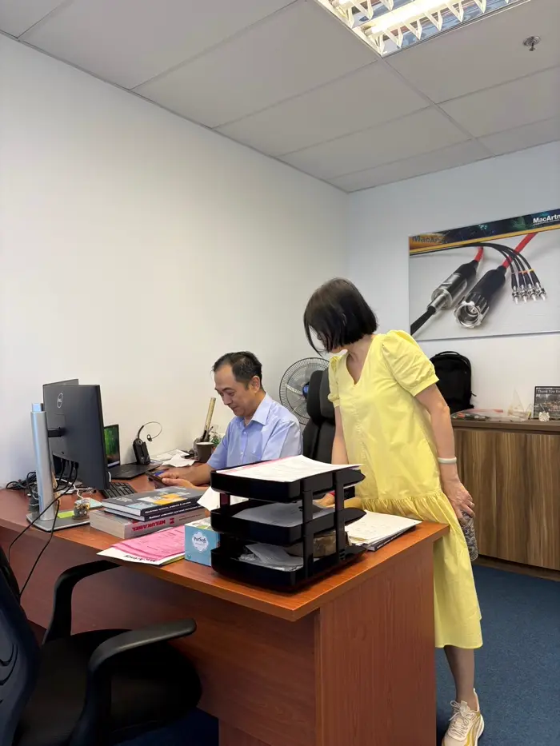

At the Heart of
Asia's Ocean Technology.
Known as the small red dot on the map, MacArtney Singapore does big things. We're a tight-knit team juggling technical sales, hands-on system support, and fast-moving projects across Asia. It's lively and fast-paced where questions fly, decisions land quickly, and everyone jumps in and owns it. Add quick banter, sharp humor, and shared laughs, you get serious work done with a smile.



"Since joining MacArtney Singapore, I've travelled across Asia, experiencing local cultures with local partners while broadening my perspective in the subsea industry. Not to forget learning how to say cheers in different languages."Jing Chung Sales Engineer
Where serious work gets done with a smile
MacArtney Singapore stands out for how much happens beyond the desk. Our team regularly travels across Asia for trade shows and industry events, getting real, on-the-ground time with customers, partners, and the wider subsea community.
Back in the office, we don't do half-hearted celebrations. Marking different occasions like Chinese New Year and Hari Raya with plenty of food and drinks. Add a well-stocked pantry where spontaneous catchups happen — there is never a boring day.
It's lively, fast-paced — and never a boring day.
"Joining MacArtney has made me appreciate both the beauty and mystery of the vast ocean."Tan Senior Sales Manager
"I value the autonomy to take ownership of complex challenges, a supportive environment and a payroll system so reliable it's clearly been engineered with redundancy."Aiman Technical/Operation Manager
"One of the aspects I value most about working at MacArtney is the company's commitment to financial reliability. The stable income and punctual payments provide me with peace of mind and enable me to manage the high cost of living in Singapore with confidence. Knowing that I can always count on timely compensation reflects MacArtney's integrity and care for its employee."Hoa Business Development Manager
"Working at MacArtney is about more than just technical knowledge. It's amazing to see how our work comes to life and connects us to the wonders of the underwater world."Kayley Team Leader